Activity: Add draft to model faces
This activity demonstrates the process of drafting faces of a model.
Learn how to draft faces and how to edit existing draft features.
Click here to download the activity file.
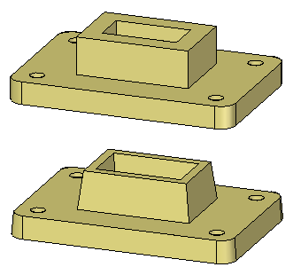
-
Open the part file draft.par.
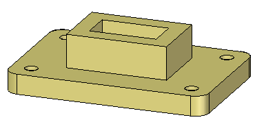
Add 5° draft to the chain of vertical faces on the base plate, outside faces on the boss and faces on the cutout.
On the Home tab→Solids group, choose the Draft command .
Select the bottom face of the base plate as the draft plane. The draft angle pivots at the draft plane.
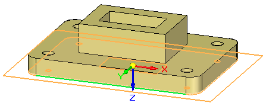
Select the chain of faces as shown.
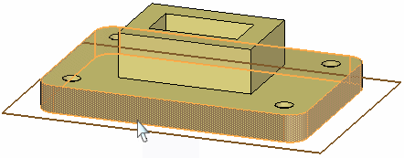
Click the origin of the direction handle to define the direction inward. In the dynamic edit box, type 5 for the draft angle and then press Enter.
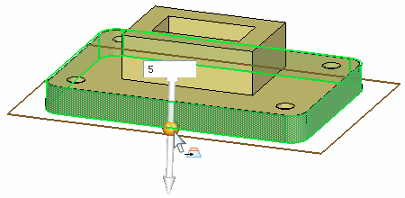
-
Add 5° draft to the four faces of the boss with direction inward. Use the top face of the base plate as the draft plane.
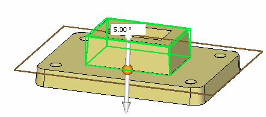
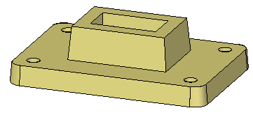
-
Add 5° draft to the four faces of the cutout with direction outward. Use the bottom face of the base plate as the draft plane.
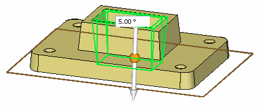
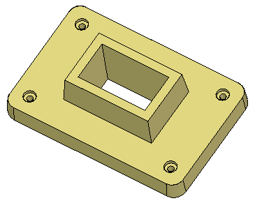
Edit the draft feature on the boss. Select the feature with QuickPick or select the feature in PathFinder.
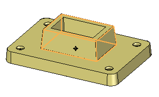
Click the 5° text to edit the draft parameters.
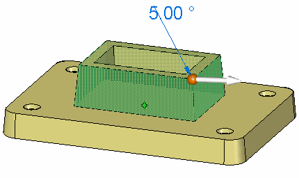
Change the draft angle to 7° and press Enter.
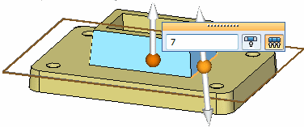
At this point the draft direction and draft plane can be edited also. Press Enter to apply the edit and then press Escape to end the command.
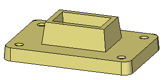
This completes the activity. Close the file and do not save.
In this activity you learned how to apply draft to faces on the model. A draft plane was selected to control the pivot point for the draft angle. If no face exists to use as a draft plane, you can create a plane and move it to the desired location. You also learned how to edit an existing draft feature.
-
Click the Close button in the upper-right corner of this activity window.